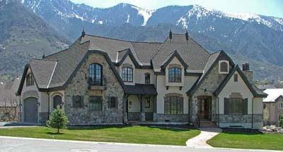
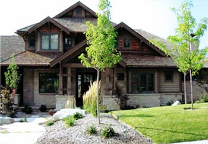
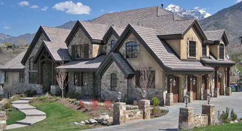
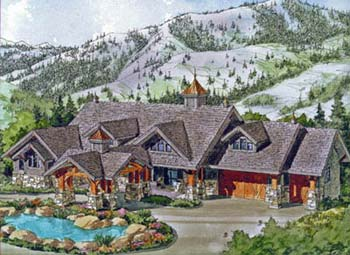
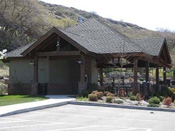
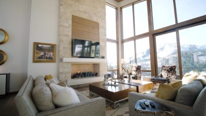
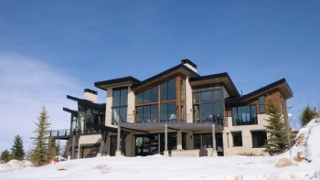
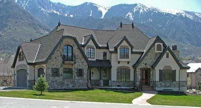
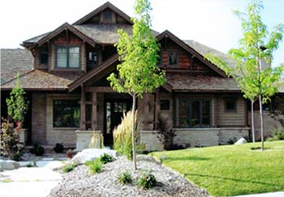
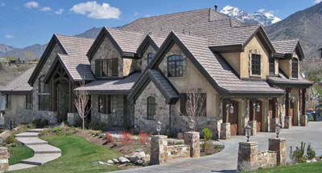
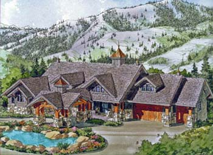
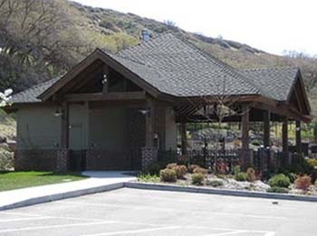
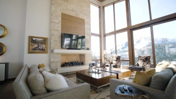
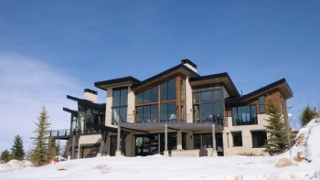
Craig Kitterman and Associates Architects is a full service architectural firm established in 1981.
Our office is located in Salt Lake City, Utah, and we serve clients in the greater Wasatch Front
area, including Park City, Heber, Provo, Ogden,
as well as clients located out of state.
We specialize in providing award-winning custom architectural services for our clients.
Our services include:
- Custom residential home design (construction documents, renderings, 3D models)
- Green architecture / Sustainable design
- Remodels and Renovations
- Light commercial design
- Pool houses, cottages, and playhouses
In addition, we are affiliated with local professionals for:
- Structural and Civil Engineering
- Landscape design
- Interior design
Contact us at:
1079 E Murray-Holladay Rd.
Salt Lake City, Utah 84117
801-270-8606 . 888-270-3258 . 801-263-3989 (fax)